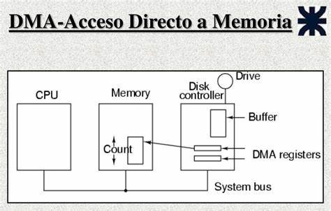

3.1.5 Controlador de acceso ala memoria (DMA)
El controlador DMA descarga las entradas y salidas de datos en periféricos rápidos, ya que el uso de interrupciones se vuelve inadecuado en estos casos. La CPU programa al controlador de DMA, indicando las direcciones de memoria que deben emplear y el tipo de transferencia. Cuando un periférico solicita transferencia de datos mediante DMA, el controlador se lo hace saber al procesador para que dé el visto bueno y acceda a la transferencia usando los buses del sistema.
